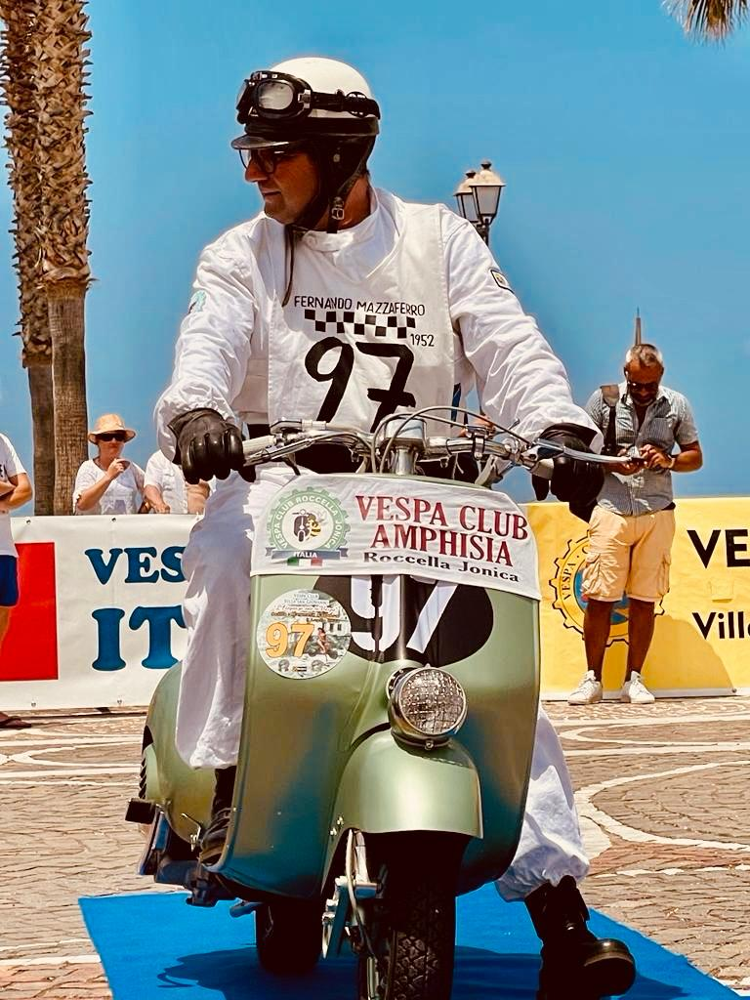
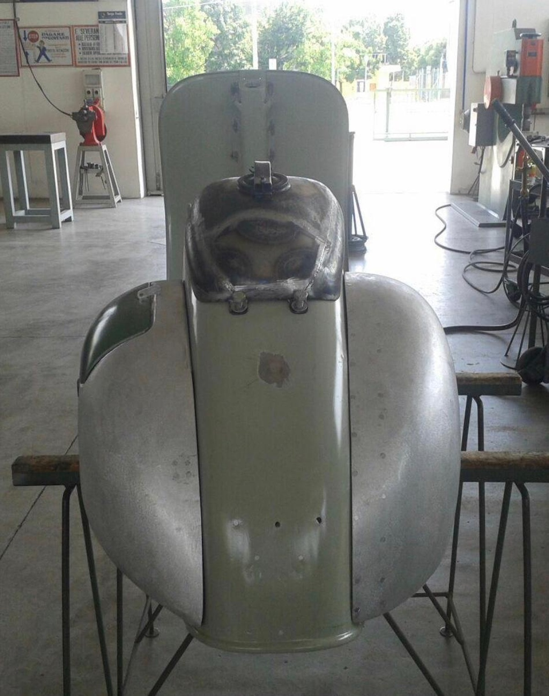
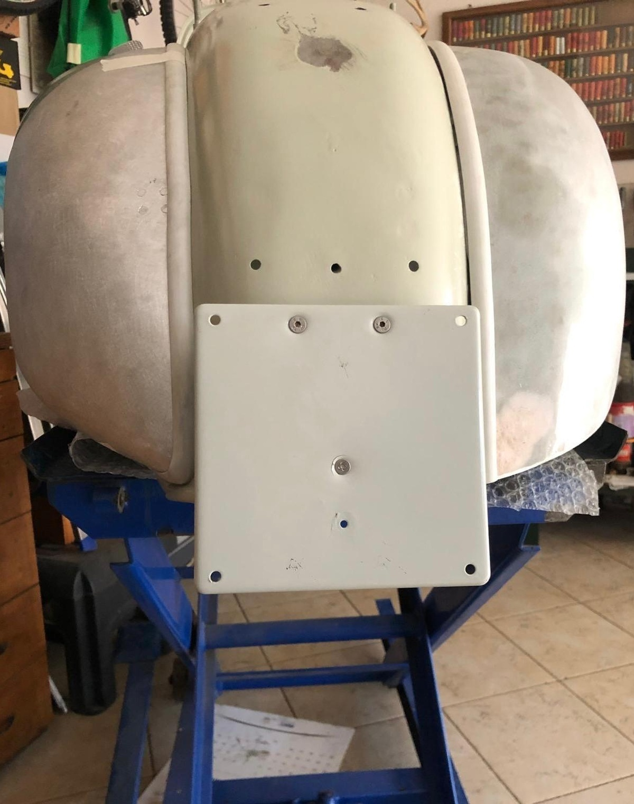

LA VESPA CHE HA DATO
INIZIO A TUTTO

Nella gallery sottostante puoi vedere alcune immagini del restauro della Vespa di mio padre, il mezzo da cui nasce la mia passione per questo mondo.
La Vespa è stata recuperata e successivamente restaurata interamente da mio padre. Ho avuto la possibilità di seguire da vicino tutte le fasi del restauro, dalla lavorazione iniziale fino al risultato finale.
Da allora questa passione mi ha portata ad approfondire sempre di più la storia della Vespa e, in particolare, quella della Vespa Sei Giorni, alla quale ho scelto di dedicare questo sito.
Quando ne ho la possibilità accompagno mio padre ai raduni, continuando a vivere insieme a lui questa passione.
IL RESTAURO


IL PROGETTO
Questo sito è stato realizzato come progetto per l'esame di Progettazione e Programmazione Web del corso di laurea in Informatica Umanistica.
Il progetto è dedicato alla storia della Vespa Sei Giorni, dalle competizioni degli anni Cinquanta fino alla sua reinterpretazione moderna, con particolare attenzione ai modelli che ne hanno caratterizzato l'evoluzione.
Durante la progettazione è stata prestata particolare attenzione all'organizzazione dei contenuti, alla leggibilità, alla facilità di navigazione e all'adattamento delle pagine alle diverse dimensioni dello schermo.
Per la ricostruzione storica e per parte del materiale fotografico è stato utilizzato come principale riferimento il libro “Vespa Sei Giorni. 9 medaglie d'oro su 10 vespisti partiti” di Giorgio Notari e Giuseppe Cau.
Ulteriori informazioni e materiali sono stati consultati su Riders Magazine , Scooter Center e Wide Piaggio Group .
Le fotografie presenti nella sezione dedicata al restauro appartengono invece alla mia raccolta personale.
Le funzionalità JavaScript sono state sviluppate utilizzando gli argomenti e le tecniche affrontate durante il corso.